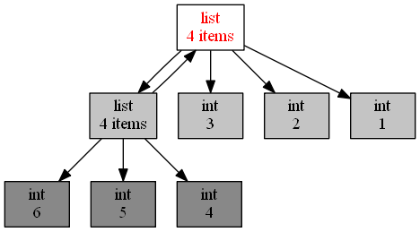
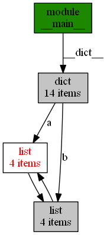

垃圾回收是 Python 自带的机制，用于自动释放不会再用到的内存空间；
Python 中一切皆对象。当这个对象的引用计数（指针数）为 0 的时候，说明这个对象永不可达，自然它也就成为了垃圾，需要被回收。
例：
# 显示当前 python 程序占用的内存大小
def show_memory_info(hint):
pid = os.getpid()
p = psutil.Process(pid)
info = p.memory_full_info()
memory = info.uss / 1024. / 1024
print('{} memory used: {} MB'.format(hint, memory))def func():
show_memory_info('initial')
a = [i for i in range(10000000)]
show_memory_info('after a created')
func()
show_memory_info('finished')
########## 输出 ##########程序初始化时占的内存为6MB，接着创建了一个列表a，由于a还没被回收，因此占的内存升到了200MB，当函数返回后，a的引用计数为0，a被回收，内存又恢复到了7MB。
如果把a变成全局变量，函数返回后，引用计数依然大于0，于是对象就不会被垃圾回收，依然占着大量的内存
def func():
show_memory_info('initial')
global a
a = [i for i in range(10000000)]
show_memory_info('after a created')
func()
show_memory_info('finished')
########## 输出 ##########
# initial memory used: 6.67578125 MB
# after a created memory used: 199.30859375 MB
# finished memory used: 199.30859375 MB或者把列表返回，在主程序中接收，引用依然存在，垃圾回收就不会被触发，大量内存仍然被占用着
def func():
show_memory_info('initial')
a = [i for i in range(10000000)]
show_memory_info('after a created')
return a
a = func()
show_memory_info('finished')
########## 输出 ##########
# initial memory used: 6.6484375 MB
# after a created memory used: 199.2890625 MB
# finished memory used: 199.2890625 MB看一下 Python 内部的引用计数机制
import sys
a = []
# 两次引用，一次来自 a，一次来自 getrefcount
print(sys.getrefcount(a))
def func(a):
# 四次引用，a，python 的函数调用栈，函数参数，和 getrefcount
print(sys.getrefcount(a))
func(a)
# 两次引用，一次来自 a，一次来自 getrefcount，函数 func 调用已经不存在
print(sys.getrefcount(a))
########## 输出 ##########
2
4
2sys.getrefcount() 这个函数，可以查看一个变量的引用次数。这段代码本身应该很好理解，不过别忘了，getrefcount 本身也会引入一次计数。另一个要注意的是，在函数调用发生的时候，会产生额外的两次引用，一次来自函数栈，另一个是函数参数。
又如：
import sys
a = []
print(sys.getrefcount(a)) # 两次
b = a
print(sys.getrefcount(a)) # 三次
c = b
d = b
e = c
f = e
g = d
print(sys.getrefcount(a)) # 八次
########## 输出 ##########
2
3
8a、b、c、d、e、f、g 这些变量全部指代的是同一个对象，而 sys.getrefcount() 函数并不是统计一个指针，而是要统计一个对象被引用的次数，所以最后一共会有八次引用。
手动释放内存，应该怎么做呢？ 方法同样很简单。只需要先调用 del a 来删除一个对象；然后强制调用 gc.collect()，即可手动启动垃圾回收。
import gc
import os
import psutil
# 显示当前 python 程序占用的内存大小
def show_memory_info(hint):
pid = os.getpid()
p = psutil.Process(pid)
info = p.memory_full_info()
memory = info.uss / 1024. / 1024
print('{} memory used: {} MB'.format(hint, memory))
show_memory_info('initial')
a = [i for i in range(10000000)]
show_memory_info('after a created')
del a
gc.collect()
show_memory_info('finish')
print(a)
initial memory used: 6.54296875 MB
after a created memory used: 199.17578125 MB
finish memory used: 7.26171875 MB
Traceback (most recent call last):
File "Coroutine.py", line 24, in <module>
print(a)
NameError: name 'a' is not defined观察代码：
def func():
show_memory_info('initial')
a = [i for i in range(10000000)]
b = [i for i in range(10000000)]
show_memory_info('after a, b created')
a.append(b)
b.append(a)
func()
show_memory_info('finished')
########## 输出 ##########
initial memory used: 6.625 MB
after a, b created memory used: 392.08984375 MB
finished memory used: 392.08984375 MB
这里，a 和 b 互相引用，并且，作为局部变量，在函数 func 调用结束后，a 和 b 这两个指针从程序意义上已经不存在了。但是，很明显，依然有内存占用！为什么呢？因为互相引用，导致它们的引用数都不为 0。
处理这种情况，可以调用显式调用 gc.collect() ，来启动垃圾回收。
Python 使用标记清除（mark-sweep）算法和分代收集（generational），来启用针对循环引用的自动垃圾回收。
objgraph，一个非常好用的可视化引用关系的包.
安装：
pip install graphviz
pip install xdot
pip install objgraphwindows的话要除了装以上库还要在官网https://graphviz.gitlab.io/_pages/Download/Download_windows.html下载，然后设置环境变量 Path增加C:\Program Files (x86)\Graphviz2.38\bin，在CMD输入dot -version验证。
通过下面这段代码和生成的引用调用图，你能非常直观地发现，有两个 list 互相引用，说明这里极有可能引起内存泄露。
import objgraph
a = [1, 2, 3]
b = [4, 5, 6]
a.append(b)
b.append(a)
objgraph.show_refs([a])
注：在windows中可能会提示:
Graph written to C:\Users\Public\Documents\Wondershare\CreatorTemp\objgraph-wwcqiie_.dot (8 nodes)
Image renderer (dot) not found, not doing anything else这时只要在打开dot文件所在的路径，然后CMD中执行
dot .\objgraph-yclwfpzr.dot -Tpng -o image.png就可以生成文件。
另一个非常有用的函数，是 show_backrefs()。以下是调用show_backrefs()生成的图片。

极客时间《Python核心技术与实战》专栏